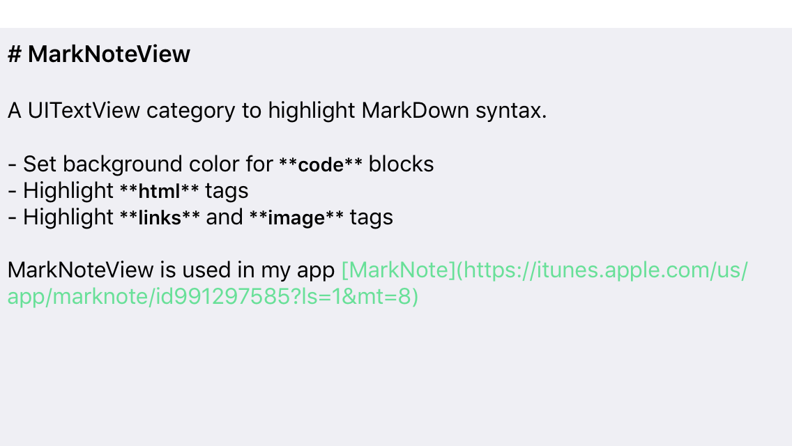

使用 UITextView来对markdown语法高亮
tags:开发随笔
自从我开始开发MarkNote 之后，一直在琢磨怎么让markdown写得更简单。
一种方式是支持语法高亮，对常用的markdown语法提供辅助。不过这个特性一直在开发计划中优先级不高，所以迟迟未能实现。
今天有点心情，研究了一把，用一种比较简单的方式实现了。下面是简单的演示效果。

没有做成 UITextView的子类，而是作为一个category来实现的，这样对使用者而言侵入性更小一些，使用起来也更方便。
Talk is cheap, show me the code!
下面简单解释一下：
SynctaxRule
首先定义了一个语法规则类SyntaxRule，它用来容纳正则表达式，以及对应的样式。样式用NSDictionary来容纳。也就是说如果文本匹配express，则对它应用style里面的样式。类很简单，声明如下：
@interface SyntaxRule @property (readonly) NSRegularExpression* express; @property (readonly) NSDictionary* styles; -(instancetype) initWithExpress:(NSRegularExpression*) exp Styles:(NSDictionary*) styles; @end
SyntaxOccurance
这个类用来代表解析后的结果：记录文本的位置，记录需要对它应用的样式:
@interface SyntaxOccurance @property(readonly) NSRange range; @property (readonly) NSDictionary* styles;
语法解析和渲染
解析过程比较直接:
1. 构建markdown 的语法规则队列, 每一个规则有表达式和需要应用的样式；
1. 对文本，遍历规则。针对每一个规则寻找文本中匹配的实例，将其位置和规则的样式构建SyntaxOccurance对象。
1. 最后，把所有的SyntaxOccurance对象直接转换为NSAttributedString , 赋予UI组件进行显示。在这里，我的例子中用的是UITextView，其他支持NSAttributedString的UI组件也是可以用的。
所有核心的代码直接扔到了 github 上。如有任何改进意见，还望多多指教。